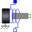

InternalSupportAdapter model to utilize conditional support connector |
Information
This information is part of the Modelica Standard Library maintained by the Modelica Association.
This is an adapter model to utilize a conditional support connector in a component. It could be applied to both textually (equations based) and graphically defined components:
- If useSupport = true, this flange has to be connected to the conditional support connector.
- If useSupport = false, this flange has to be connected to the conditional fixed model.
Variable f is defined as input. It must be provided as a modifier and computed via a force balance when using this model in textually defined components. This approach of internal support is utilized, e.g., via the following partial models:
- PartialOneFlangeAndSupport,
- PartialTwoFlangesAndSupport,
- PartialElementaryRotationalToTranslational.
Note, the support position can always be accessed as internalSupport.s, and the support force can always be accessed as internalSupport.f.
Inputs (1)
| f |
Type: Force (N) Description: External support force (must be computed via force balance in model where InternalSupport is used; = flange.f) |
|---|
Connectors (1)
| flange |
Type: Flange_a Description: Internal support flange (must be connected to the conditional support connector for useSupport=true and to conditional fixed model for useSupport=false) |
|---|
Used in Components (3)
|  |
Modelica.Electrical.Analog.Basic Electromotoric force (electric/mechanic transformer) |
|
Modelica.Mechanics.MultiBody.Joints Prismatic joint (1 translational degree-of-freedom, 2 potential states, optional axis flange) |
|
|
PartialElementaryRotationalToTranslational Modelica.Mechanics.Rotational.Interfaces Partial model to transform rotational into translational motion |